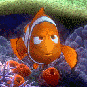
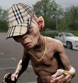

De: La Frikipedia, la enciclopedia extremadamente seria.
De: La Frikipedia, la enciclopedia extremadamente seria. De: La Frikipedia, la enciclopedia extremadamente seria.
«...»
~ Cadáver en una piscina que no sabía lo que era natación
«No aguantan ná»
~ Gamer hablando de personajes de videojuegos de aventura en el agua
Natación es un deporte de riesgo extremo en el que movemos piernas y brazos (solo si quieres) para desplazarse por el agua.
| De la serie deportes para todos: | |||
| Natación | |||
| |||
| Número de practicantes | Es un país libre | ||
| ¿Deporte Olímpico? | Sí | ||
| Campeonatos | Varios | ||
| ¿Donde se practica? | En la pisci y | ||
| ¿Control anti-dopping? | Nadie se da cuenta | ||
| Riesgo de muerte | De ahogarte | ||
| Árbitro | Fue asesinado | ||
| Hinchas | Desinflado | ||
Todo comenzó en el año 1004 A.T.(Antes de Timofónica) en el que un pez muy vago no se le ocurrió otra cosa que mover sus aletas y cola, se empezó a mover y vio que era bueno. Entonces con esta habilidad fue a decírselo a los amigos que no tenía y la voz corrió como Sonic. Poco después esta moda se extendió hasta la superficie y cuando se enteraron los Australopitecus lo probaron y vieron como esta droga les hacía crecer todos los músculos.
A través del tiempo la natación siguió popularizándose cada vez más y más y más... Durante las Edades Media y Moderna perdió mucho poder y ya solo lo practicaban los náufragos. Se volvió a popularizar siglos después con el aprovechamiento de las playas y si alguien entonces no sabía nadar era considerado un cani.
En la actualidad este deporte a la vez es un pasatiempo y un deporte olímpico. Esto ha generado una nueva enfermedad a los que nadan demasiado: La pezformosis. Es decir te transformas en un pez.
Para nadar hay que hacer estos movimientos básicos:
Los Friki-científicos han encontrado la cura contra la pezformosis y es una receta con los siguientes ingredientes e ingremuelas:
Mézclalo todo en un caldero de bruja durante 30 min. y si sale vapor, ahí lo tenemos.
Échale esto al enfermo y pasará de  a .
AchtungJesús. No, soy Luis:Leer esto mirando la imagen de arriba.
| | |||
|---|---|---|---|
|
Deportes
Deportistas
Competiciones
Otros
Artes Marciales
|
Autor(es):